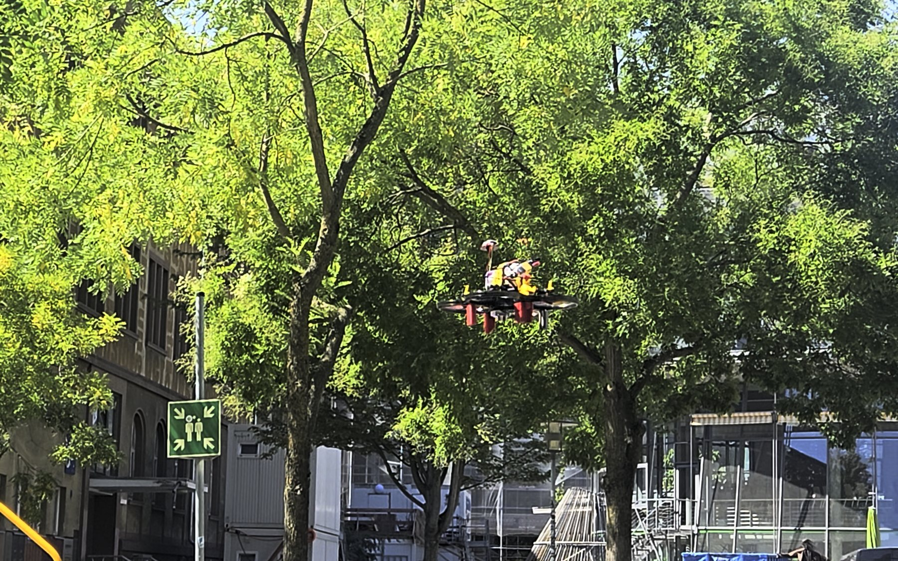

Frankfurt University of Applied Sciences · Fachbereich 2 · Projektarbeit
KI-Drohne mit AprilTag-Abwurf
Von der FPV-Renndrohne zur GPS-freien Indoor-Plattform: ArduPilot-Autopilot,
Raspberry Pi als Companion-Computer, AprilTag-Erkennung auf der Kamera und ein
servogesteuerter Nutzlast-Abwurf — mit den Flugversuchen, die dahin geführt haben.
Team (4 Personen)Jannik Höhler · Julian Veerkamp · Sebastian Urmann · Serkan Savranoglu
BetreuungProf. Dr. Baun
Ziel des Projekts
Ausgangspunkt ist eine flugfertige 3,5"-CineWhoop-FPV-Drohne, die ausschließlich
manuell per Fernsteuerung geflogen wird. Ziel ist der Umbau zu einer Plattform,
die ohne GPS in Innenräumen fliegt, am Boden angebrachte AprilTags
erkennt und über einem Tag eine Nutzlast abwirft.
Teilziele
Autopilot: Betaflight durch ArduPilot Copter ersetzen, Konfiguration
über QGroundControl.
Position & Altitude Hold ohne GPS über LiDAR und optischen Fluss.
Markererkennung auf dem Companion-Computer statt Fernsteuerung durch
den Piloten.
Abwurfmechanismus mit 9g-Servo, ausgelöst durch die Erkennung.
Rahmenerweiterung (3D-Druck) für Sensor, Servo, Pi und Kamera.
Plattform & Hardware
Rahmen
SpeedyBee BEE35 Pro, 3,5" CineWhoop
Flight Controller
Flywoo GOKU GN745 AIO (STM32F745)
Firmware
ArduPilot Copter 4.6.3
Antrieb
4 × Emax Eco II 2004, 3000 KV, ESC 45 A
Funkstrecke
ExpressLRS, RadioMaster XR4 Gemini
Companion
Raspberry Pi Zero 2 WH
Kamera
Raspberry Pi AI Camera (Sony IMX500)
Navigation
MicoAir MTF-01P — LiDAR + Optical Flow
Aktuator
Micro-Servo 9g (MS18-F) für Abwurf
FPV-Video
RunCam Phoenix 2 → SpeedyBee TX800
Projekt in Zahlen
29 fpsAufnahme + Tag-Erkennung bei 640×480 auf dem Pi
MTF-01P in Betrieb nehmenUART5, EKF3-Fusion, Telemetrie als CSV verifiziert
Raspberry Pi anbindenUART4-MAVLink, automatisierter Health-Check
AprilTag-Erkennung auf dem Pitag36h11, zwei Backends, Durchsatz vermessen
Abwurf durch die Erkennung ausgelöstServo öffnet bei stabil erkanntem Tag
Flugversuche → Absturz21.08.: Totalschaden an der Hallendecke, Aufbau repariert
Autonome Mission im FlugSuchen, Anfliegen, Zentrieren, Abwerfen — offen
Die Drohne

Abb. 1: Die 3,5"-CineWhoop im Flug — ducted Propeller und Propellerschutz
erlauben Flüge in Innenräumen und in Personennähe.
Systemarchitektur
Abb. 2: Signalfluss zwischen Bodenstation, Fernsteuerung, Autopilot,
Companion-Computer, Sensorik und Abwurf.
Fliegen ohne GPS
In Innenräumen fehlt das GPS-Signal. Der MTF-01P ersetzt es durch zwei
Messgrößen, die der EKF3-Zustandsschätzer von ArduPilot direkt verarbeitet:
LiDAR misst den Abstand zum Boden (1–800 cm) → Höhe über Grund.
Optischer Fluss schätzt aus der Bildverschiebung die horizontale
Geschwindigkeit → Halten der Position ohne Satelliten.
Angebunden über SERIAL5 mit FLOW_TYPE=5 und
RNGFND1_TYPE=10. Wichtige Einschränkung: EKF3 startet die
Flussnavigation erst, wenn es ein Abheben erkannt hat — die Positionslösung, die
GUIDED verlangt, existiert am Boden also noch nicht.
Zwischenergebnis: Tag erkannt → Last fällt
Die Kette Kamera → Erkennung → Aktuator funktioniert und ist der
vorzeigbare Stand des Projekts: Die nach unten gerichtete IMX500 erkennt
tag36h11-Marker, und sobald ein Tag stabil erkannt ist, öffnet der
Servo den Haltebügel und lässt die Nutzlast fallen.
Zwei Detektor-Backends: AprilTag 3.4.2 nativ (meldet Hamming-
Korrektur und Decision Margin) und OpenCV 4.11 ArucoDetector
mit DICT_APRILTAG_36h11 als Rückfall und für die Kalibrierung.
Durchsatz auf dem Pi Zero 2 W (gemessen 18.08.): 29 fps bei 640×480,
13–15 fps bei 1280×960 jeweils inklusive Bildaufnahme; der Detektor allein
schafft bis 76 fps.
Auslösung: Erst mehrere aufeinanderfolgende Frames mit derselben
erlaubten ID lösen aus; der Servo wird direkt vom Pi über GPIO angesteuert
und die Freigabe ist verriegelt, sodass sie sich nicht wiederholen kann.
Metrische Distanz nur mit Kalibrierung: ohne hinterlegte Intrinsics
meldet die Software bewusst nur IDs und Eckpunkte statt einer erfundenen
Entfernung.
Verifiziert am Boden und handgeführt — nicht im autonomen Flug.
Rahmen & 3D-Druck
Die Rahmenerweiterung trägt Sensor, Servo, Pi und Kamera. Jedes Teil liegt
zweifach im Repository: als STL (die Geometrie, für jeden Slicer) und als
3MF mit den Einstellungen, mit denen tatsächlich gedruckt wurde.
Pi-Gehäuse in PETG, 37,6 × 72,6 × 13,4 mm, Stützen sind Teil des
Modells statt vom Slicer erzeugt.
Weiche Rahmenteile (vorn, hinten, 2 × seitlich) in TPU 95A. Sie
sind bewusst flexibel: sie dämpfen Schwingungen, und genau davon hängen
optischer Fluss und die Zustandsschätzung ab — in starrem Filament gedruckt
sind sie kein Ersatz.
Servohalter für den 9g-Servo, Stellbereich 900–2100 µs, Neutral
1500 µs; Anlaufstrom bis 1,6 A über den geregelten 5-V-Zweig.
Gedruckt auf einer Prusa XL, 0,4-mm-Düse, 0,20 mm Schichthöhe, 30 % Infill.
Software & Werkzeuge
Autopilot
ArduPilot Copter · QGroundControl
Protokoll
MAVLink 2 (pymavlink, MAVProxy)
Companion
Raspberry Pi OS · Python 3.13 · uv
Erkennung
AprilTag 3 · OpenCV ArUco (36h11)
Qualität
ruff · ty · pytest · import-linter
CAD / Druck
Tinkercad · PrusaSlicer · PETG / TPU 95A
Flugversuche
Der vollständig autonome Flug wurde nicht erreicht. Die Versuche sind
trotzdem das lehrreichste Ergebnis der Arbeit — jeder ist über Telemetrie und
Dataflash-Log ausgewertet.
20.08.
Erster Flug überhaupt. Stieg über die befohlene Höhe hinaus und
blieb oben; die Drohne hing an einer Leine und wurde durch Abziehen des
Akkus gestoppt.
21.08. vormittags
Zwei STABILIZE-Starts, kein Abheben. Der Rangefinder meldet über
13 s konstant 0,02 m. Der befohlene Schub lag bei 0,128 gegen einen
gelernten Hover von 0,263.
21.08. Totalschaden
Der Abbruch flog die Drohne. Der Timeout löste eine Landung aus —
und LAND ist höhengeregelt. In einem einzigen Log-Sample ging der Schub von
0,128 auf 1,000 und die Drohne stieg in einer Sekunde in die Hallendecke.
21.08. abends
Erstes echtes Abheben nach dem Wiederaufbau: 0,02 m → 0,57 m in
0,4 s. Der Höhenwächter stoppte den Steigflug korrekt.
21.08. abends
Wächter greift. „Steigt mit +0,96 m/s“ meldet das Fahrzeug, während
der Rangefinder 0,00 m/s misst — Abbruch nach 0,8 s Widerspruch, noch bevor
Schub aufgebaut wurde.
Drei Ursachen, gemessen
Der EKF hatte keine Höhenquelle.EK3_SRC1_POSZ=2 benannte
den Rangefinder, EK3_RNG_USE_HGT=-1 verbot dessen Nutzung. Der
Filter meldete −10 000 m und −38 m/s Sinken, während die Drohne
auf dem Boden stand. STABILIZE ignoriert das; LAND regelt danach.
Mit dem Barometer als Quelle: +0,05 m und +0,01 m/s.
Die Schubkennlinie war falsch angenommen. ArduPilot formt den
STABILIZE-Stick kubisch, sodass Stickmitte Hover-Schub ist. Der Code
setzte den Stick auf 0,313 im Glauben, das sei Hover — die Kennlinie macht
daraus 0,135, also etwa die halbe nötige Kraft.
Ein Beschleunigungs-Offset im Betrieb. Stillstehend misst die Drohne
9,79 m/s²; mit laufenden Motoren im Leerlauf 10,65 m/s² bei unveränderter Lage.
EKF3 integriert die Differenz zu 0,75 m/s² Drift pro Sekunde — daher „Steigt mit
4,27 m/s“ bei 0,020 m Bodenabstand. Die Vibrationsmetrik bleibt dabei blind,
weil sie Streuung misst und ein gleichgerichteter Rüttler ein Gleichanteil ist.
Video: der Absturz
Aufnahme vom 21.08.2026Der zweite STABILIZE-Start: 13 Sekunden ohne Bewegung, dann der Abbruch,
der die Drohne in einem Zug in die Hallendecke fliegt.photos.app.goo.gl/q4YqJamv6uWtpWg16
Abb. 3: Der Absturz, gefilmt vom Boden — QR-Code scannen.
Was die Simulation leistet
Jeder Flugbefehl lässt sich gegen ein simuliertes Fahrzeug proben
(drone-rehearse), in das 11 Fehlerbilder injiziert werden
können — verweigertes Armieren, weglaufende Höhe, Batterieeinbruch, veraltete
Telemetrie, Heartbeat-Verlust, divergierender EKF. Der Unfall vom 21.08. ist als
Fehlerbild nachgebaut, dazu über 500 Offline-Tests.
Und die eigentliche Lehre: Der Simulator enthielt dieselbe falsche Annahme
über die Schubkennlinie wie der Flugcode. Eine Probe gegen ihn konnte den
Fehler deshalb prinzipiell nicht finden — eine Simulation prüft Code gegen
Annahmen, nicht Annahmen gegen die Wirklichkeit.
Konsequenzen im Code
Landen ist keine Notbremse mehr. Steht die Drohne noch am Boden,
wird entwaffnet statt gelandet.
Ein Flug gilt erst als begonnen, wenn die Drohne abgehoben ist —
vorher ist ein Fehler kein Notfall in der Luft.
Vor dem Armieren muss die Vertikalschätzung 3 s ruhig sein
(±0,10 m/s); gemeldete Steigrate und Rangefinder werden laufend verglichen.
Jeder Abbau prüft den Disarm und erzwingt ihn, wenn ein frischer
Rangefinder die Drohne am Boden hält.
Bricht die WLAN-Verbindung ab, beendet das den Flug geordnet, statt ihn
sich selbst zu überlassen.
Vorflugprüfungen nie abschalten: erlaubt sind nur „alle“ oder „alle außer
GPS“ — und geprüft werden Werte, nicht nur Statusbits.
Stand & Ausblick
Erreicht: ArduPilot in Betrieb, GPS-freie Sensorik verifiziert,
Pi angebunden, AprilTag-Erkennung und der davon ausgelöste Abwurf.
Offen: die autonome Mission im Flug — Suchen, Anfliegen, Zentrieren,
Abwerfen.
Nächste Schritte: den Beschleunigungs-Offset mechanisch beseitigen
(der Motortest misst ihn), Geofence und Failsafes fahrzeugseitig aktivieren,
Kamera starr montieren und kalibrieren — dann gefesselte Tests.